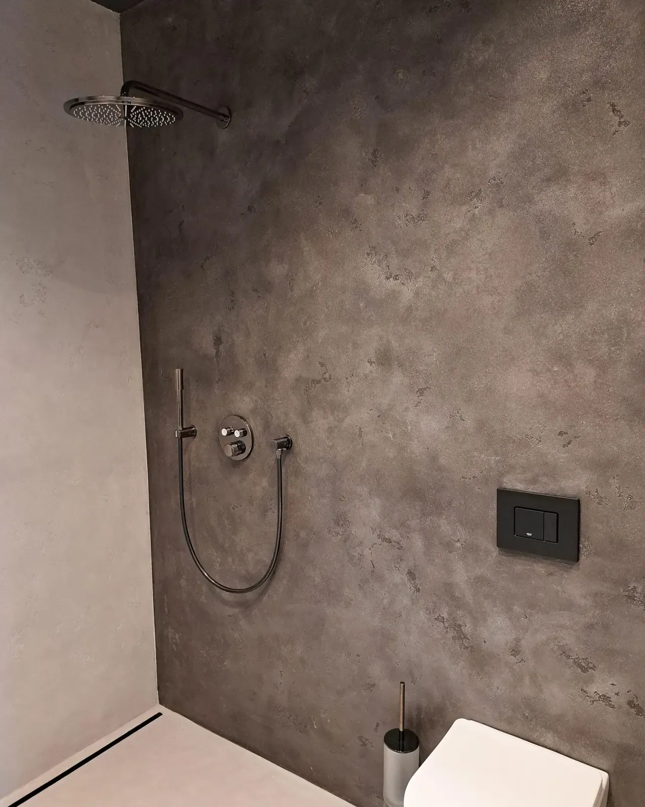
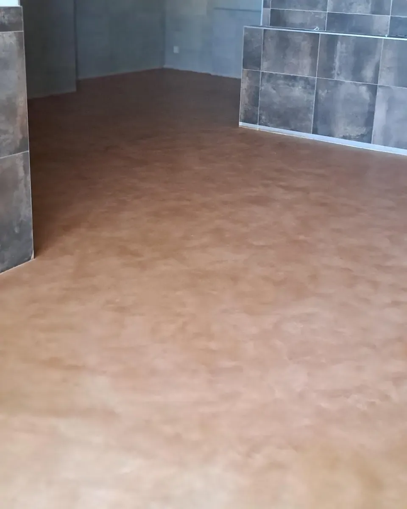
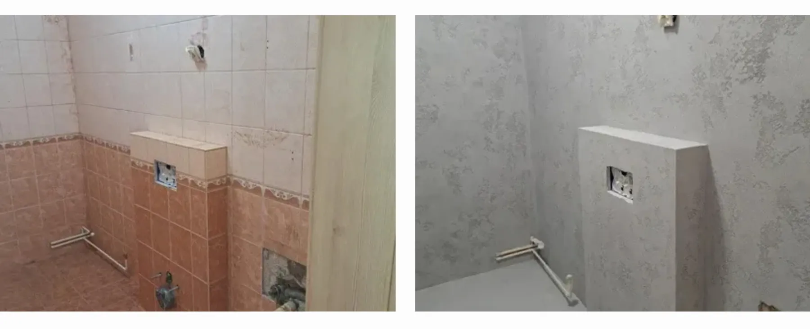

Betonová stěrka do koupelny: co zvládne, jak se udržuje a proč ji zvolit?
Betonová stěrka v koupelně zaujme moderním vzhledem bez spár, snadnou údržbou i širokou nabídkou odstínů. Jak si poradí s vodou, kde všude ji můžete použít a na co myslet při realizaci?

Líbí se vám moderní koupelny s jednolitými povrchy bez spár, ale u betonové stěrky vás napadne: Co voda? Může být i ve sprše? Jak se čistí a vydrží každodenní provoz?
Dobrá zpráva je, že betonové stěrky určené do koupelny jsou navržené právě s ohledem na vlhkost, vodu a běžné používání. Při správném provedení je můžete využít ve sprchovém koutě, za vanou, za umyvadlem i na dalších stěnách koupelny.
A navíc rozhodně nemusí být jen šedé. Dnešní betonové stěrky KABE Farben do koupelny nabízejí desítky odstínů od bílé a světlých přírodních tónů až po tmavé a výrazné designové varianty.

Betonová stěrka ve sprše? Ano
Právě sprchový kout bývá místem, kde mají lidé z betonové stěrky největší obavy. Voda ale při použití správného koupelnového systému není překážkou.
Koupelnové betonové stěrky KABE Farben vytvářejí omyvatelný, vodoodpudivý a odolný povrch, který je vhodný i do vlhkého prostředí. Finální ochrannou vrstvu tvoří PUR lak, který povrch uzavírá proti vodě.
Důležité je ovšem správné provedení celého systému. Ve sprchovém koutu je základem kvalitně připravený podklad a správně provedená hydroizolace, na kterou navazují další vrstvy betonové stěrky a její finální ochrana.
Bez spár a se snadnou údržbou
Jednou z největších předností betonové stěrky v koupelně je souvislý povrch bez klasických obkladových spár.
Koupelna díky tomu působí čistěji, klidněji a opticky sjednoceně. Výrazně to vynikne například u velkého walk-in sprchového koutu, kde může celá stěna tvořit jednu nepřerušovanou plochu.
Absence klasických spár má také praktickou výhodu – ubývají místa, ve kterých se zachycují nečistoty a která je potřeba při běžném úklidu složitě čistit.
Koupelnové betonové stěrky mají omyvatelnou finální úpravu, takže pravidelná údržba není náročná. Pro dlouhou životnost povrchu je samozřejmě vhodné volit šetrné čisticí prostředky a vyhnout se agresivnímu mechanickému čištění.
Stěrka nemusí být jen šedá
Betonová stěrka už dávno neznamená pouze klasický šedý industriální beton.
Najdete u nás sametově hladké i lehce strukturované povrchy a velmi široký výběr barev. Každá stěrka je navíc aplikována ručně, takže výsledná kresba a jemná textura dodávají povrchu osobitý charakter.
Pro koupelny si můžete vybírat ze čtyř hlavních skupin:
- bílé odstíny – čisté a minimalistické,
- světlé odstíny – ideální pro vzdušný a nadčasový interiér,
- tmavé odstíny – elegantní a výrazné,
- designové odstíny – pro koupelny, které mají být skutečným originálem.
Aktuální nabídka zahrnuje 2 bílé, 26 světlých, 12 tmavých a 14 designových variant. Pokud tedy hledáte něco jiného než klasickou šedou, možností je opravdu hodně.

Světlé tóny dokážou menší koupelnu opticky odlehčit a krásně se kombinují například s přírodním dřevem nebo kamenem. Tmavší stěrky naopak vytvářejí elegantní atmosféru ve stylu hotelového spa a nechají vyniknout osvětlení, zrcadla, niky nebo designové baterie.
Každý povrch je originál
Velké kouzlo betonových stěrek spočívá také v tom, že vznikají ruční aplikací. Výsledkem proto není sériově se opakující dekor. Podle techniky aplikace může být povrch velmi jemný a sametový, nebo naopak strukturovanější s výraznější kresbou.
Právě struktura společně s odstínem a světlem vytváří výsledný charakter koupelny. Proto doporučujeme stěrky nevybírat pouze podle fotografie na monitoru. V Brno Showroomu Emplastrum Design si můžete materiály prohlédnout naživo, porovnat jejich struktury a odstíny a vybrat variantu, která bude nejlépe fungovat právě ve vašem interiéru.
Od sprchového koutu až po proměnu starší koupelny
Velkou výhodou je variabilita. Betonovou stěrkou nemusíte pokrýt celou koupelnu – může vytvořit jen jeden výrazný prvek nebo naopak propojit více ploch do jednoho celku. Hodí se do sprchového koutu, za vanu a umyvadlo, do nik, na dominantní stěnu i na další plochy vystavené vlhkosti.
Zajímavou volbou je betonová stěrka také při rekonstrukci starší koupelny. Dokáže výrazně změnit vzhled prostoru a vytvořit jednotný, moderní povrch bez klasických spár. U konkrétních koupelnových systémů KABE Farben může být celková tloušťka skladby do přibližně 2 mm, takže nevzniká zbytečně masivní nová vrstva. Vždy je ale důležité nejprve posoudit stav původního podkladu a zvolit správnou skladbu.
Na ukázce před a po je krásně vidět, jak velký rozdíl může správně zvolená stěrka udělat. V Emplastrum Design vám rádi poradíme s výběrem vhodného systému, odstínu i struktury tak, aby výsledný povrch odpovídal stylu vaší koupelny.

Svépomocí, nebo od profesionála?
Pokud vás betonové stěrky baví a chcete se naučit s nimi pracovat, existují také workshopy. KABE Farben pořádá workshopy aplikace betonových stěrek, které probíhají také v Brně a jsou určené jak pro koncové zákazníky, tak pro řemeslníky a další zájemce o práci s betonovými stěrkami.
Na workshopu si můžete projít celý postup od přípravy a základní vrstvy přes samotnou aplikaci až po finální úpravu povrchu. Získáte tak nejen teorii, ale především možnost vyzkoušet si práci se stěrkou vlastníma rukama.
U koupelny je ale potřeba dobře zvážit vlastní zkušenosti. Zejména sprchový kout, hydroizolace, rohy, prostupy nebo napojení na odtok jsou místa, kde je precizní provedení zásadní.
Pokud si na realizaci svépomocí netroufáte, můžete realizaci betonové stěrky svěřit nám a my se postaráme o celý proces její aplikace. V Showroomu Emplastrum Design s vámi nejprve probereme vaše představy a poradíme s výběrem vhodného materiálu, odstínu, struktury i celkového řešení.
Není se čeho bát
Pokud toužíte po moderní koupelně bez klasické sítě obkladů a spár, betonová stěrka nabízí spojení designu, praktičnosti a širokých možností použití.
Je omyvatelná, vodoodpudivá, snadno se udržuje, při správné skladbě ji lze použít i ve sprchovém koutu a vybírat můžete z desítek barevných a designových variant.
A protože betonová stěrka je materiál, u kterého hraje velkou roli nejen barva, ale také struktura a práce světla, nejlepší je vidět ji naživo.
Přijďte se proto inspirovat do Brno Showroomu Emplastrum Design, kde si můžete jednotlivé povrchy prohlédnout, porovnat možnosti a probrat řešení pro vaši koupelnu.